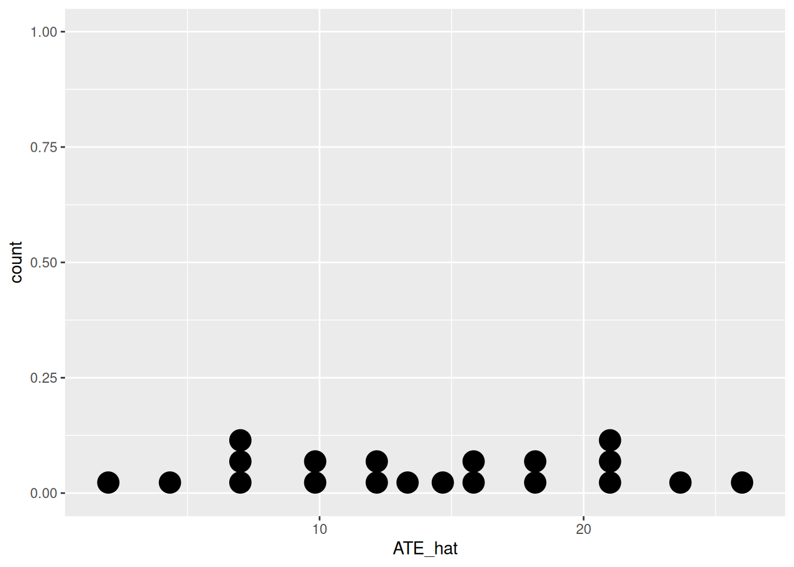
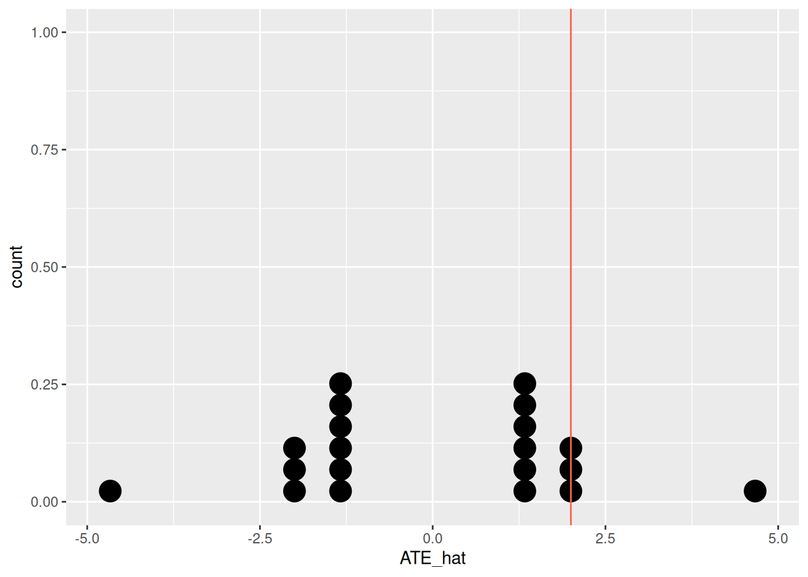

library(tidyverse)
anchor_mini_sched <- tibble(Y_0 = c(15, 15, 19, 2, 10, 8),
Y_1 = c(31, 22, 45, 20, 20, 15))
anchor_mini_sched <- anchor_mini_sched |>
mutate(tau = Y_1 - Y_0)
parameters <- anchor_mini_sched |>
summarize(Ybar_1 = mean(Y_1),
Ybar_0 = mean(Y_0),
ATE = mean(tau))Testing
Let’s pick up where we left off in calculating our sampling distribution of \(\widehat{ATE}\).
Calculating the sampling distribution
To learn the sampling distribution of \(\widehat{ATE}\), we need to:
- Articulate every possible way to split the six students into two groups of size three.
- For each unique partition, calculate \(\widehat{ATE}\)
- Calculate the probability of observing each of those values.
To aid in step 1, we can use the permutations() function to show every permutation of the a vector containing size elements, three of which indicate the treatment (1) and three of which indicate the control (0). We can imagine that the indices of this vector correspond to the indices of the students.
library(arrangements)
d_x <- c(0, 0, 0, 1, 1, 1)
permmat <- permutations(d_x) |>
unique()There are many ways to use R to calculate all corresponding \(\widehat{ATE}\)s. I’ll use a method that makes a dataframe for every permutation, stacks them on top of one another, then uses grouped aggregation to calculate the estimates. This method is conceptually clean, however if the number of permutations was in the hundreds or thousands, it would be too RAM-intensive an an interative approach using the apply() family would be better.
# replicate the anchor sched 20 times and stack them on top of one another
all_partitions_df <- map_dfr(1:nrow(permmat), ~ anchor_mini_sched, .id = "partition") |>
mutate(partition = factor(partition, levels = as.character(1:20), ordered = TRUE))
# add the unique permutations as a new column and find y_i, the observed responses
all_partitions_df <- all_partitions_df |>
mutate(d_i = as.vector(t(permmat)),
y_i = Y_1 * d_i + Y_0 * (1 - d_i))
all_partitions_df# A tibble: 120 × 6
partition Y_0 Y_1 tau d_i y_i
<ord> <dbl> <dbl> <dbl> <dbl> <dbl>
1 1 15 31 16 0 15
2 1 15 22 7 0 15
3 1 19 45 26 0 19
4 1 2 20 18 1 20
5 1 10 20 10 1 20
6 1 8 15 7 1 15
7 2 15 31 16 0 15
8 2 15 22 7 0 15
9 2 19 45 26 1 45
10 2 2 20 18 0 2
# ℹ 110 more rows# calculate ATE-hat for every partition
all_partitions_ATEs <- all_partitions_df |>
group_by(partition, d_i) |>
summarize(ybar = mean(y_i)) |> # average within each group within each partition
summarize(ATE_hat = diff(ybar)) |> # take the difference between the two groups mean each partition
arrange(partition)`summarise()` has grouped output by 'partition'. You can override using the
`.groups` argument.all_partitions_ATEs# A tibble: 20 × 2
partition ATE_hat
<ord> <dbl>
1 1 2
2 2 16
3 3 13.3
4 4 15.7
5 5 7
6 6 4.33
7 7 6.67
8 8 18.3
9 9 20.7
10 10 18
11 11 10
12 12 7.33
13 13 9.67
14 14 21.3
15 15 23.7
16 16 21
17 17 12.3
18 18 14.7
19 19 12
20 20 26 Visualize the distribution of estimates
ggplot(all_partitions_ATEs, aes(x = ATE_hat)) +
geom_dotplot()Bin width defaults to 1/30 of the range of the data. Pick better value with
`binwidth`.
Note that the stacking of the dots doesn’t mean they take the same value. Indeed, each of the 20 possible partitions has a different \(\widehat{ATE}\).
all_partitions_ATEs |>
distinct(ATE_hat) |>
nrow()[1] 20Calculate E and V
First add probabilities (each partition is equally likely):
all_partitions_ATEs <- all_partitions_ATEs |>
mutate(prob = 1 / n())
all_partitions_ATEs# A tibble: 20 × 3
partition ATE_hat prob
<ord> <dbl> <dbl>
1 1 2 0.05
2 2 16 0.05
3 3 13.3 0.05
4 4 15.7 0.05
5 5 7 0.05
6 6 4.33 0.05
7 7 6.67 0.05
8 8 18.3 0.05
9 9 20.7 0.05
10 10 18 0.05
11 11 10 0.05
12 12 7.33 0.05
13 13 9.67 0.05
14 14 21.3 0.05
15 15 23.7 0.05
16 16 21 0.05
17 17 12.3 0.05
18 18 14.7 0.05
19 19 12 0.05
20 20 26 0.05Then calculate Expected Value.
expected_value <- sum(all_partitions_ATEs$ATE_hat * all_partitions_ATEs$prob)
expected_value[1] 14Note that this is the same as the value of the parameter, \(ATE\), demonstrated the unbiasedness of this estimator.
Next calculate Variance.
var <- sum((all_partitions_ATEs$ATE_hat - expected_value)^2 * all_partitions_ATEs$prob)
var[1] 42.66667Testing
my_experiment <- all_partitions_df |>
filter(partition == "1")
my_experiment# A tibble: 6 × 6
partition Y_0 Y_1 tau d_i y_i
<ord> <dbl> <dbl> <dbl> <dbl> <dbl>
1 1 15 31 16 0 15
2 1 15 22 7 0 15
3 1 19 45 26 0 19
4 1 2 20 18 1 20
5 1 10 20 10 1 20
6 1 8 15 7 1 15my_experiment <- my_experiment |>
select(d_i, y_i)
my_experiment# A tibble: 6 × 2
d_i y_i
<dbl> <dbl>
1 0 15
2 0 15
3 0 19
4 1 20
5 1 20
6 1 15Calculate observed test statistic:
ATE_obs <- my_experiment |>
group_by(d_i) |>
summarize(Ybar = mean(y_i)) |>
summarize(ATEhat = diff(Ybar)) |>
pull()
ATE_obs[1] 2Make schedule under sharp null
my_null_sched <- my_experiment |>
mutate(Y_0 = y_i,
Y_1 = y_i) |>
select(Y_0, Y_1)
my_null_sched# A tibble: 6 × 2
Y_0 Y_1
<dbl> <dbl>
1 15 15
2 15 15
3 19 19
4 20 20
5 20 20
6 15 15Turn the Sampling Crank…
# replicate the anchor sched 20 times and stack them on top of one another
all_partitions_df <- map_dfr(1:nrow(permmat), ~ my_null_sched, .id = "partition") |>
mutate(partition = factor(partition, levels = as.character(1:20), ordered = TRUE))
# add the unique permutations as a new column and find y_i, the observed responses
all_partitions_df <- all_partitions_df |>
mutate(d_i = as.vector(t(permmat)),
y_i = Y_1 * d_i + Y_0 * (1 - d_i))
all_partitions_df# A tibble: 120 × 5
partition Y_0 Y_1 d_i y_i
<ord> <dbl> <dbl> <dbl> <dbl>
1 1 15 15 0 15
2 1 15 15 0 15
3 1 19 19 0 19
4 1 20 20 1 20
5 1 20 20 1 20
6 1 15 15 1 15
7 2 15 15 0 15
8 2 15 15 0 15
9 2 19 19 1 19
10 2 20 20 0 20
# ℹ 110 more rows# calculate ATE-hat for every partition
all_partitions_ATEs <- all_partitions_df |>
group_by(partition, d_i) |>
summarize(ybar = mean(y_i)) |> # average within each group within each partition
summarize(ATE_hat = diff(ybar)) |> # take the difference between the two groups mean each partition
arrange(partition)`summarise()` has grouped output by 'partition'. You can override using the
`.groups` argument.all_partitions_ATEs# A tibble: 20 × 2
partition ATE_hat
<ord> <dbl>
1 1 2
2 2 1.33
3 3 1.33
4 4 4.67
5 5 -1.33
6 6 -1.33
7 7 2
8 8 -2
9 9 1.33
10 10 1.33
11 11 -1.33
12 12 -1.33
13 13 2
14 14 -2
15 15 1.33
16 16 1.33
17 17 -4.67
18 18 -1.33
19 19 -1.33
20 20 -2 Visualize the Sampling Distribution under the null
ggplot(all_partitions_ATEs, aes(x = ATE_hat)) +
geom_dotplot() +
geom_vline(xintercept = ATE_obs, color = "tomato")Bin width defaults to 1/30 of the range of the data. Pick better value with
`binwidth`.
Calculate p-value
mean(abs(all_partitions_ATEs$ATE_hat) > ATE_obs)[1] 0.1A function for a Randomization Test
rand_stats <- function(schedule, d_i, stat = "diff in means", reps = 1000) {
# store treatment vector separately
d_i_vec <- d_i
# replicate the schedule reps times and stack them on top of one another
randomized_exp_df <- map_dfr(1:reps, ~ schedule, .id = "experiment") |>
mutate(experiment = factor(experiment, levels = as.character(1:reps), ordered = TRUE),
d_i = c(replicate(n = reps, sample(d_i_vec))), # create random assignments
y_i = Y_1 * d_i + Y_0 * (1 - d_i)) |> # find observed responses
arrange(experiment)
# calculate test statistic for every random assignment
if (stat == "diff in means") {
stats <- randomized_exp_df |>
group_by(experiment, d_i) |>
summarize(ybar = mean(y_i), # average within each group within each experiment
.groups = "drop_last") |>
summarize(ATE_hat = diff(ybar),
.groups = "drop") |> # take the difference between the two groups mean
pull()
} else {
stop("Statistic not implemented")
}
return(stats)
}Here’s a demonstation of how this version works. The order of the elements in d_i do not matter but the total number and type do: they illustrate the size of the different groups.
stats <- rand_stats(schedule = my_null_sched, d_i = c(0, 0, 0, 1, 1, 1))Compare p-values.
mean(abs(stats) > ATE_obs)[1] 0.093